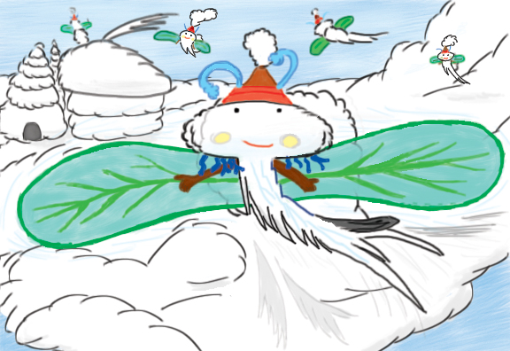

Posted: 2017-08-07
, Modified: 2017-07-25
Tags: writing
Parent: Writing
Children:
(*) Check out my current writing project, Philosophocle!
Below are stories/poems I have finished and information about ones that I am working on, in chronological order. I’d love to hear comments (including criticisms)! Just comment on the googledocs or send me an email at oldheneel@gmail.com. If you would like to preview and give feedback on work-in-progress, please join the Holden’s Readers googlegroup.

Read about cloud fairies.
Also check out my deviant art.
(*) Personal pick.
Writing
Completed stories
- (*) The Loss of Magic (online, Word doc) (9/2010) - She caressed her letters, and they popped out of the page, rustling their newfound wings. Mr. Cavid’s words looked like big fat red caterpillars; as she ran her fingers over them she could feel their spiky bodies rising from the page. They think they’re feeding on a bunch of leaves, she thought, well, guess again. The mass of green letters, each a cross between a fly and a maple key, rose from the page, overturning the bewildered caterpillars, who landed on the blank paper with a satisfying plop.
Huntress (googledoc, Word doc) (5/2011) The girl moved through the long grass. The wind pushed the prairie grasses against her face and wove them into her hair. When she was close enough to see the lion breathing, she hoisted up her iron pike and lunged.
A hand deftly caught the pike around the middle. A boy had suddenly appeared, sitting astride the lion. He looked at her unblinkingly, his gaze telling her he would not hesitate to kill her, and wrenched the pike from her grasp. She reached for her Assassin’s Knife—just one quick slice at the lion’s chest would suffice—but the boy suddenly thrust her pike towards her, and by reflex she somersaulted backwards, barely avoiding it.- Mona (online, Word doc) (6/2011)
- (*) Creature Club (googledoc, Word doc) (6/2011) - I don’t know whether it was the fuzzy black antennys ending in pom-pom balls or the sniffly pink snout or the round glimmery eyes or the two flubby flipper-wings or the simple luxury of round white balloon-like furriness, but once I laid eyes on her I had to have her. In goes the one-dollar bill; the slightest nudge of my hand sends the gripper off, before it jerks to a stop right above the creature. I press the red button and the hook descends, clutching her cotton skull, bouncing her two antennys together as she rises slowly and royally above the mass of face-down rabbits with oversize ears, scorpions with shells of yucky speckled gray-green plastic, fairies with too-orange skin and tight stiff wings. The flashing light bulbs reflect from her eyes, and as she draws to eye level she seems to be looking directly at me and saying, “I knew that I was destined for higher things.”
- Return to Taiwan (googledoc, Word doc) (4/2013) - “We’re so glad you returned to Taiwan,” they all said, like it was where I belonged, like I had been born there too, not just my parents. They waved tearfully, and Liangliang asked, “When’s the next time you’ll return to Taiwan?” Because “going to Taiwan” didn’t have the same ring to it… I returned to Taiwan again, unexpectedly, during the winter of sixth grade. Permanently.
- Two Sides of the River (googledoc) (4/2013)
- (*) A Random Collection (3/2014) - A collage of articles about a fictional mathematician.
- (*) Three (2016) - A math olympiad coming-of-age story - Trianca wrestles with her intellectual insecurity, friendship, and perhaps even romance at the Math Olympiad Summer Program.
- (*) Goodnight Mel (1/2017) - A quirky couple moves into a house in the country, haunted by a girl called Mel who plays strange music. For Anna, Mel is the daughter who she’s never had. Will they learn the mystery of Mel’s tragic past and grant her dying wish before the people of the town banish her forever?
- (*) Cloud fairies (5/2017) - An origin myth - When the cloud fairies rob the earth of all color and water, it is up to Chieftain Leio to win them back for the earth. Recording from Open Mic night.
- I would like to turn this into a picture book, and am looking for an illustrator. Email me if interested!
The heart of time (3/2019) - Conservation of time says that however much one person is sped up, another must be slowed down by the same amount. Hence, Chronopolis is split into fasttown and slowtown. A fasttown-slowtown couple work together to break the system.
Poetry
Songs
Shorts
Unfinished
- Pleasant Island 1 - After their houseboat was destroyed by a sea monster, Al, Brody, Tommy, Aly, Betty, and Tinny find themselves stranded on a magical island filled with fantastical creatures. The island seems peaceful at first, but they soon have to confront Crocomons, defend themselves from live snowballs, and finally save the island from volcanic destruction. How will they manage to escape? (Here is a sample chapter on cloud fairies.)
- Pleasant Island 2: The Legend of Magicoly - (Sequel) A magical storm sends Pleasant Island hurtling into space, and a giant beetle shows up on the family’s doorstep. Before they know it, the family is whisked off to the new Pleasant Island. At first they enjoy their time as tourists but soon they find themselves in the middle of an all-out attack on the archipelago…
- Into the World of Dreams - sample
- Context Cities (NaNoWriMo 2014) - About, one chapter
- Don’t grow up it’s a conspiracy (1/2015)
Videos
- All rights reserved.